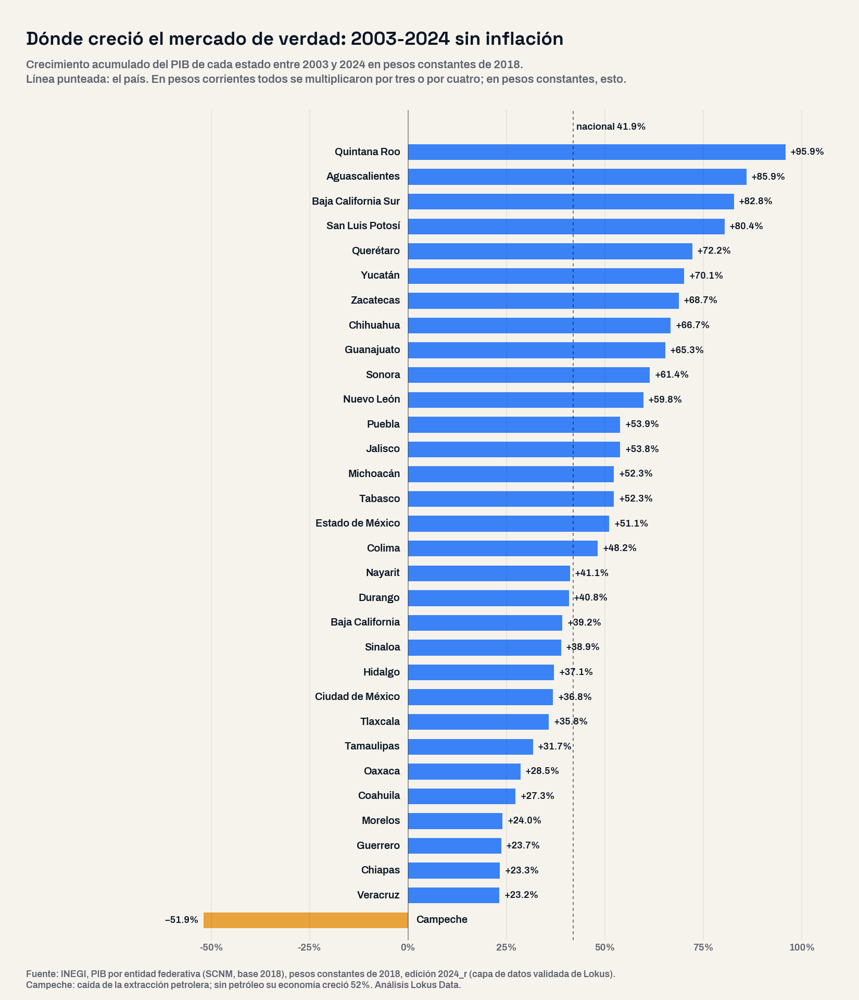
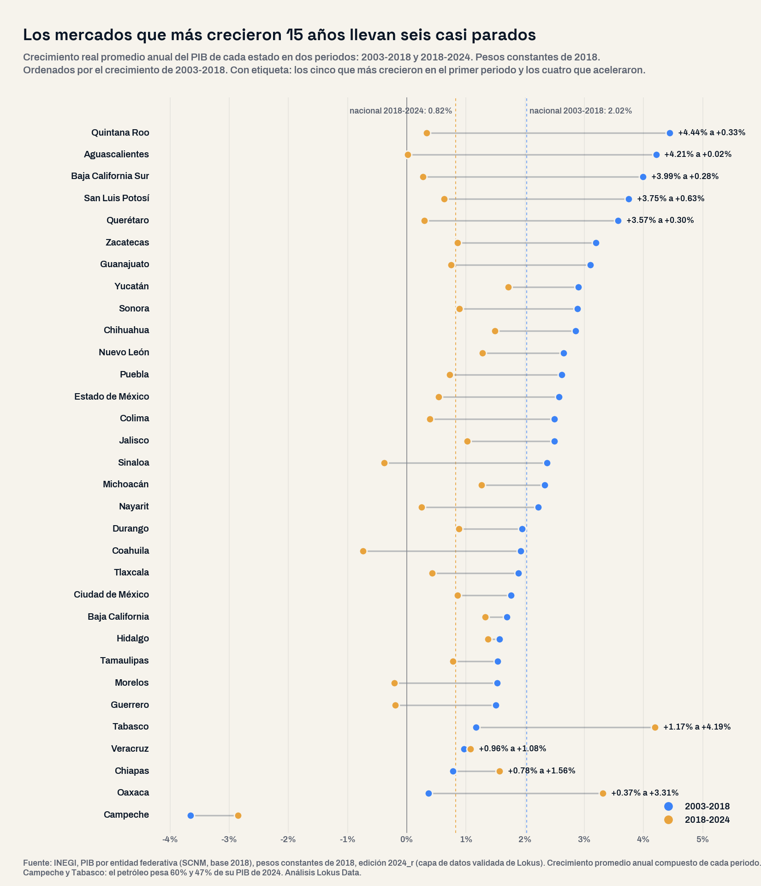

Los mercados que más crecieron durante 15 años llevan seis casi parados: el ranking real de los 32 estados
En pesos corrientes, la economía de cada estado se multiplicó por tres o por cuatro desde 2003. Descontada la inflación, el país creció 41.9% y 84% de ese aumento llegó antes de 2018. Quintana Roo, Aguascalientes, Baja California Sur, San Luis Potosí y Querétaro lideraron quince años y hoy no alcanzan 1% anual; 27 de 32 estados crecen más lento y cinco producen menos que en 2018.

El panorama: 42% real en 21 años, casi todo antes de 2018
Cualquier plan de expansión que mida el tamaño de un mercado estatal en pesos corrientes ve una economía que se multiplicó por 4.1 desde 2003. Descontada la inflación, el PIB de México pasó de 17.9 a 25.4 billones de pesos de 2018: 41.9% más, 1.68% anual. Y el ritmo cambió a la mitad del camino: 2.02% anual entre 2003 y 2018, 0.82% entre 2018 y 2024. De cada 100 pesos de crecimiento real de los últimos 21 años, 84 llegaron antes de 2018.
La pregunta de este análisis fue abierta: ¿qué mercados estatales crecieron de verdad entre 2003 y 2024, en qué momento y con qué sector, y cuáles crecen hoy? Se ordenaron los 32 estados por su crecimiento en pesos constantes, sin preseleccionar regiones, con el PIB por entidad federativa del INEGI en su edición 2024. Es la única fuente de crecimiento real por estado; el Censo Económico, que usamos en el ranking manufacturero de las 32 entidades, mide en pesos corrientes.
La lectura de negocio
El mercado que creció a 4% anual durante quince años no es el mismo mercado hoy: los cinco estados que encabezan el ranking de 21 años crecen menos de 1% anual desde 2018. Dimensionar con la tasa histórica sobreestima la demanda futura.
El mapa: quién ganó los 21 años y quién los últimos seis
En el acumulado 2003-2024 encabezan Quintana Roo (+95.9%), Aguascalientes (+85.9%), Baja California Sur (+82.8%), San Luis Potosí (+80.4%) y Querétaro (+72.2%), seguidos de Yucatán, Zacatecas, Chihuahua, Guanajuato y Sonora. En el fondo, sin contar a Campeche y su petróleo, están Veracruz (+23.2%), Chiapas (+23.3%), Guerrero (+23.7%), Morelos (+24.0%) y Coahuila (+27.3%). La mitad del aumento nacional cabe en seis mercados: Ciudad de México, Estado de México, Nuevo León, Jalisco, Guanajuato y Chihuahua.
El ranking cambia por completo al partirlo en 2018. Los cinco líderes crecieron entre 3.57% y 4.44% anual hasta 2018 y desde entonces Aguascalientes suma +0.1%, Baja California Sur +1.7%, Querétaro +1.8%, Quintana Roo +2.0% y San Luis Potosí +3.8% en seis años. 27 de los 32 estados crecen más lento que antes. Los que aceleraron son cuatro, todos en el sur y el Golfo: Tabasco (4.19% anual desde 2018, 74% del aumento en minería petrolera), Oaxaca (3.31%, 66% en construcción), Chiapas (1.56%) y Veracruz (1.08%).

Qué sector movió cada mercado
A escala nacional, en 21 años el sector que más valor real sumó fue la manufactura (1.36 billones de pesos de 2018, 36% más que en 2003), seguida del comercio al por mayor, los servicios inmobiliarios, el comercio al por menor y el transporte. Los que más rápido crecieron fueron otros: los servicios financieros se multiplicaron por 4.1 (6.9% anual) y los medios y telecomunicaciones por 4.3. La minería produce 30% menos que en 2003.
Por estado, la manufactura explicó 51% del crecimiento de Aguascalientes y 55% del de San Luis Potosí en 21 años, y creció 182% y 162% en términos reales; en Zacatecas, 158%, y en Chihuahua, 119%. En el otro extremo, la manufactura de la Ciudad de México produce 32% menos que en 2003, la de Oaxaca 30% menos y la de Tabasco 20% menos. Lo que se frenó en los cinco líderes después de 2018 fue, sobre todo, la construcción, que produjo entre 38% y 50% menos en Aguascalientes, Baja California Sur y San Luis Potosí, mientras su manufactura se estancó: +1.2% en Aguascalientes y −0.3% en Querétaro en seis años. En Quintana Roo, los hoteles y restaurantes produjeron en 2024 24 mil millones de pesos de 2018 menos que en 2018.
Donde el crecimiento reciente descansa en manufactura, el mapa es el norte: Chihuahua (1.49% anual desde 2018, 47% del aumento en manufactura), Hidalgo (1.37%, 34%), Baja California (1.32%, 62%) y Nuevo León (1.28%, 41%). Yucatán (1.72%) crece con hoteles, restaurantes y comercio, sin petróleo ni obra.
Riesgos: cinco mercados más chicos que en 2018
Coahuila produjo en 2024 4.4% menos que en 2018, con una manufactura 6.9% menor: es el único mercado industrial del país en contracción real. Sinaloa perdió 2.3% (agricultura y construcción), Morelos 1.3%, Guerrero 1.2% y Campeche 15.9%. Y el indicador trimestral de actividad estatal del INEGI muestra que en el primer trimestre de 2026 la actividad seguía cayendo frente al mismo trimestre de 2025 en Coahuila (−4.7%), Morelos (−3.1%), Campeche (−5.2%) y también en Quintana Roo (−2.9%), Oaxaca (−2.8%), Baja California (−2.5%), San Luis Potosí (−1.8%) y Aguascalientes (−1.7%). Crecían Hidalgo (+7.4%), Tamaulipas (+5.2%), Colima (+4.0%) y Tabasco (+3.3%).
Perfil del mercado: tamaño por habitante y empleo formal
Crecer rápido no es lo mismo que ser grande. Con la población que proyecta CONAPO para 2024, el PIB por habitante va de 64,821 pesos de 2018 en Chiapas a 422,051 en la Ciudad de México, 6.5 veces más; Nuevo León (329,363), Coahuila (276,748) y Sonora (266,296) siguen a la capital, y Campeche (498,351) queda arriba de todos por el petróleo, no por su mercado de consumo. Los tres estados más pobres por habitante, Chiapas, Guerrero y Tlaxcala, están entre los diez que menos crecieron en 21 años: la brecha entre mercados no se cerró.
El empleo formal, medido por separado y con otra ventana (puestos afiliados al IMSS entre enero de 2020 y julio de 2026), añade un matiz: creció 27.8% en Hidalgo, 25.3% en el Estado de México, 23.0% en Baja California Sur y 19.9% en Nuevo León, contra 11.1% en el país, y cayó en Sinaloa (−3.2%), Campeche (−2.8%) y Tamaulipas (−1.2%). Coahuila sumó 10.4% de puestos formales mientras su producción real bajaba: más empleo con menos valor, el mismo cruce que encontramos en el mapa de productividad y costo laboral de las 32 entidades.
| Estado | PIB 2024 (mmdp de 2018) | Real 2003-2024 | Anual 2003-2018 | Anual 2018-2024 | PIB por habitante 2024 (miles de pesos de 2018) | Empleo IMSS ene-2020 a jul-2026 | Actividad 2026T1 |
|---|---|---|---|---|---|---|---|
| Quintana Roo | 385 | +95.9% | +4.44% | +0.33% | 189 | +9.2% | −2.9% |
| Aguascalientes | 328 | +85.9% | +4.21% | +0.02% | 216 | +7.9% | −1.7% |
| Baja California Sur | 188 | +82.8% | +3.99% | +0.28% | 214 | +23.0% | +2.5% |
| San Luis Potosí | 579 | +80.4% | +3.75% | +0.63% | 197 | +10.4% | −1.8% |
| Querétaro | 622 | +72.2% | +3.57% | +0.30% | 241 | +17.2% | +0.7% |
| Yucatán | 404 | +70.1% | +2.90% | +1.72% | 164 | +12.4% | +2.1% |
| Zacatecas | 240 | +68.7% | +3.20% | +0.86% | 142 | +1.6% | +1.3% |
| Chihuahua | 932 | +66.7% | +2.85% | +1.49% | 235 | +6.9% | −1.0% |
| Guanajuato | 1,172 | +65.3% | +3.10% | +0.75% | 182 | +11.2% | +1.3% |
| Sonora | 825 | +61.4% | +2.88% | +0.89% | 266 | +2.1% | −0.2% |
| Nuevo León | 2,060 | +59.8% | +2.65% | +1.28% | 329 | +19.9% | +1.2% |
| Puebla | 887 | +53.9% | +2.62% | +0.73% | 128 | +5.3% | +2.7% |
| Jalisco | 1,865 | +53.8% | +2.49% | +1.03% | 212 | +13.0% | −1.2% |
| Michoacán | 683 | +52.3% | +2.33% | +1.26% | 137 | +5.9% | +1.7% |
| Tabasco | 603 | +52.3% | +1.17% | +4.19% | 245 | +19.8% | +3.3% |
| Estado de México | 2,317 | +51.1% | +2.57% | +0.54% | 132 | +25.3% | +1.5% |
| Colima | 157 | +48.2% | +2.50% | +0.39% | 207 | +14.7% | +4.0% |
| Nayarit | 158 | +41.1% | +2.22% | +0.25% | 121 | +14.7% | +1.0% |
| Durango | 326 | +40.8% | +1.95% | +0.88% | 171 | +9.8% | −0.8% |
| Baja California | 951 | +39.2% | +1.69% | +1.32% | 235 | +19.7% | −2.5% |
| Sinaloa | 516 | +38.9% | +2.37% | −0.38% | 163 | −3.2% | −1.2% |
| Hidalgo | 454 | +37.1% | +1.57% | +1.37% | 140 | +27.8% | +7.4% |
| Ciudad de México | 3,889 | +36.8% | +1.76% | +0.86% | 422 | +7.1% | +0.0% |
| Tlaxcala | 152 | +35.8% | +1.88% | +0.43% | 107 | +13.5% | +0.9% |
| Tamaulipas | 767 | +31.7% | +1.54% | +0.78% | 207 | −1.2% | +5.2% |
| Oaxaca | 466 | +28.5% | +0.37% | +3.31% | 109 | +9.7% | −2.8% |
| Coahuila | 924 | +27.3% | +1.93% | −0.74% | 277 | +10.4% | −4.7% |
| Morelos | 270 | +24.0% | +1.53% | −0.21% | 132 | +1.1% | −3.1% |
| Guerrero | 314 | +23.7% | +1.50% | −0.19% | 87 | +3.6% | +0.5% |
| Chiapas | 388 | +23.3% | +0.78% | +1.56% | 65 | +17.4% | +1.9% |
| Veracruz | 1,098 | +23.2% | +0.96% | +1.08% | 135 | +1.2% | +0.0% |
| Campeche | 475 | −51.9% | −3.65% | −2.85% | 498 | −2.8% | −5.2% |
Ordenados por crecimiento real 2003-2024. Sombreados: los cinco líderes de 2003-2018. PIB por habitante con población proyectada por CONAPO. Fuente: INEGI (PIBE base 2018, ITAEE serie original), IMSS, CONAPO (capa Oro Lokus).
Insights para la acción
- Dimensiona con la tasa reciente, no con la histórica. Un modelo que proyecte Querétaro, Aguascalientes o Quintana Roo al 3.5% o 4% anual de 2003-2018 está sobreestimando: los tres crecieron menos de 0.35% anual entre 2018 y 2024.
- El norte manufacturero sigue creciendo. Chihuahua, Hidalgo, Baja California y Nuevo León combinan crecimiento real por encima del país desde 2018 y aumento en manufactura; Nuevo León suma además 19.9% de empleo formal desde 2020. Son los mercados donde demanda industrial y nómina crecen a la vez.
- Separa obra de mercado. Oaxaca creció 21.6% en seis años, pero dos tercios vinieron de la construcción. El mercado de consumo que queda cuando la obra termina es el de una economía con 108,527 pesos de PIB por habitante y una manufactura 30% más chica que en 2003.
- Coahuila y Sinaloa piden cautela. Producción real en caída desde 2018 y actividad a la baja en 2026: para abrir o ampliar ahí, mide el sector específico antes que el estado.
- Cruza con la competencia instalada. El crecimiento real dice dónde crece la demanda; el estudio de mercado y el conteo de unidades económicas dicen cuánta oferta ya existe en cada estado y municipio.
Conclusión
Medido en pesos constantes, México produce 42% más que en 2003, pero el mapa de dónde crece cambió de lugar. Los cinco mercados que lideraron quince años llevan seis casi parados; 27 estados crecen más lento; los que aceleraron lo hicieron con petróleo y obra, y los que crecen con industria están en el norte. Para quien decide dónde expandirse, el ranking útil no es el de 21 años ni el de pesos corrientes: es el de los últimos seis, sector por sector, con la actividad de 2026 a la vista.
Preguntas frecuentes
¿Qué estados de México crecieron más entre 2003 y 2024 en términos reales?
Quintana Roo (+95.9%), Aguascalientes (+85.9%), Baja California Sur (+82.8%), San Luis Potosí (+80.4%) y Querétaro (+72.2%), en pesos constantes de 2018. El país creció 41.9%.
¿Qué estados crecen más desde 2018?
Tabasco (4.19% anual, por petróleo), Oaxaca (3.31%, por construcción), Yucatán (1.72%), Chiapas (1.56%), Chihuahua (1.49%), Hidalgo (1.37%), Baja California (1.32%) y Nuevo León (1.28%). El país creció 0.82% anual en ese periodo.
¿Qué estados producen menos que en 2018?
Campeche (−15.9%), Coahuila (−4.4%), Sinaloa (−2.3%), Morelos (−1.3%) y Guerrero (−1.2%), en pesos constantes de 2018.
¿Cuál es el PIB por habitante de cada estado?
Con la población proyectada por CONAPO para 2024, va de 64,821 pesos de 2018 en Chiapas a 422,051 en la Ciudad de México; Campeche (498,351) queda arriba por el petróleo. El promedio nacional es de 192,814 pesos.
Análisis basado en el PIB por entidad federativa del INEGI (Sistema de Cuentas Nacionales de México, base 2018, edición 2024 revisada), valores a precios constantes de 2018 y corrientes, total y por sector SCIAN, 2003-2024; Indicador Trimestral de la Actividad Económica Estatal (ITAEE) del INEGI, serie original, primer trimestre de 2026 frente al mismo trimestre de 2025; IMSS, puestos de trabajo afiliados, enero de 2020 y julio de 2026 (empleo formal privado por domicilio del patrón, ventana distinta a la del PIB y nunca en un mismo ratio); CONAPO, proyección de población 2024, solo para el PIB por habitante (cruce de dos fuentes y una proyección). Consultado en la capa de datos validada de Lokus. Universo completo de 32 estados ordenado por el crecimiento real del PIB total; crecimiento anual = tasa promedio anual compuesta entre los años extremos de cada periodo; la contribución de cada sector se calcula sobre el cambio del valor agregado bruto sectorial; «sin petróleo» = PIB total menos minería petrolera (SCIAN 21-1). Las cifras 2018-2024 incluyen la caída de 2020 y su recuperación. La serie por sector registra desde 2021 una caída de los servicios de apoyo a los negocios (SCIAN 56) en todos los estados que coincide con la reforma de subcontratación; se muestra como está en la fuente. Clasificación SCIAN: 21 minería (21-1 petrolera), 23 construcción, 31-33 manufacturas, 43 comercio al por mayor, 46 comercio al por menor, 48-49 transportes, 51 medios masivos, 52 servicios financieros, 53 servicios inmobiliarios, 56 apoyo a los negocios, 72 alojamiento y alimentos. Fecha de análisis: 28 de septiembre de 2026. Para medir el crecimiento real, la competencia, el empleo formal y el tamaño del mercado de cualquier estado o municipio con datos oficiales integrados, visita lokusdata.com